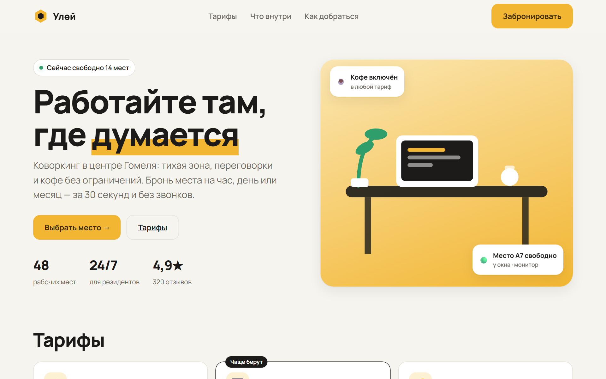
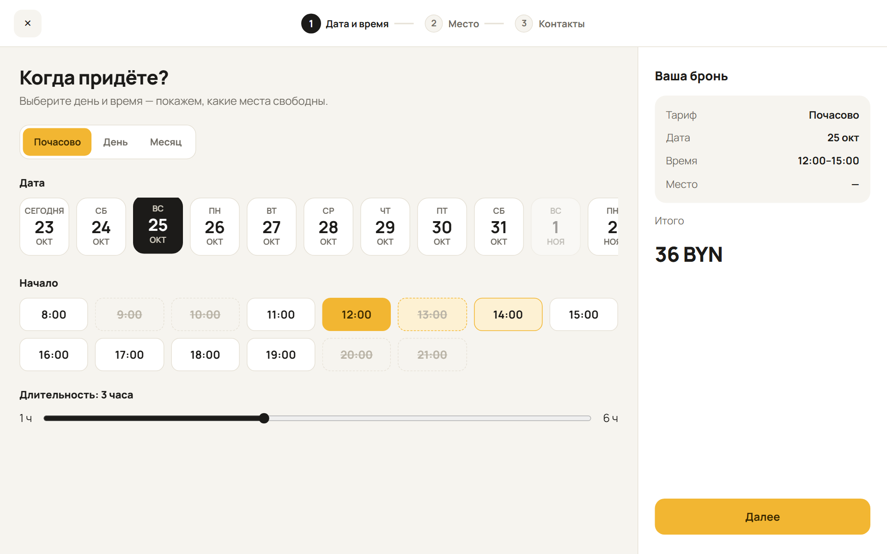
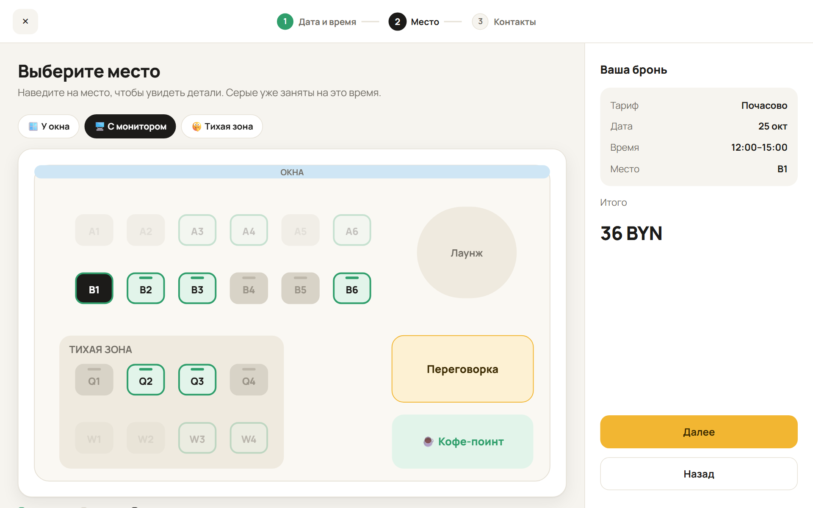
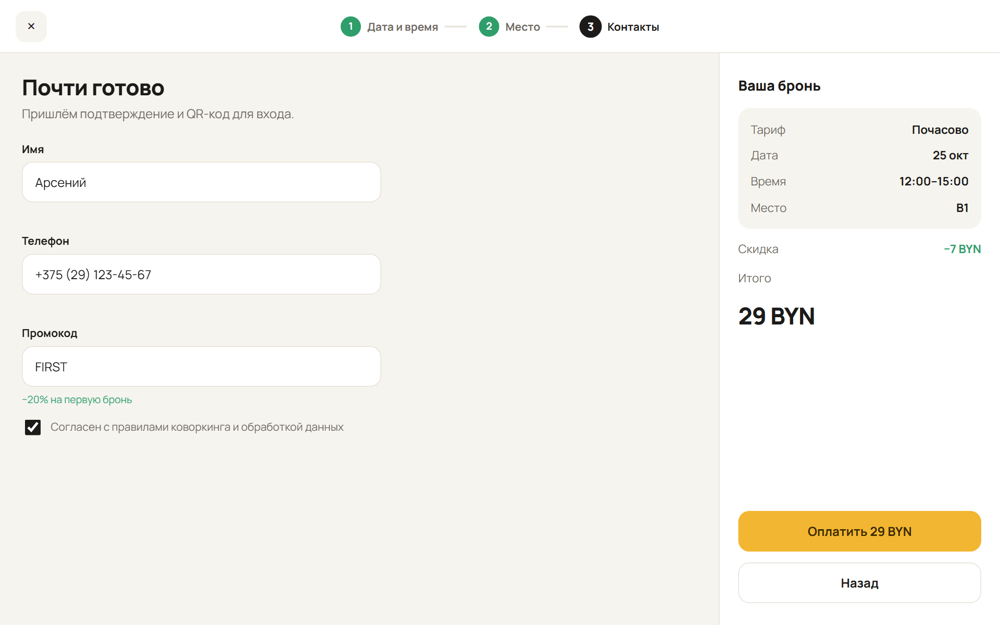
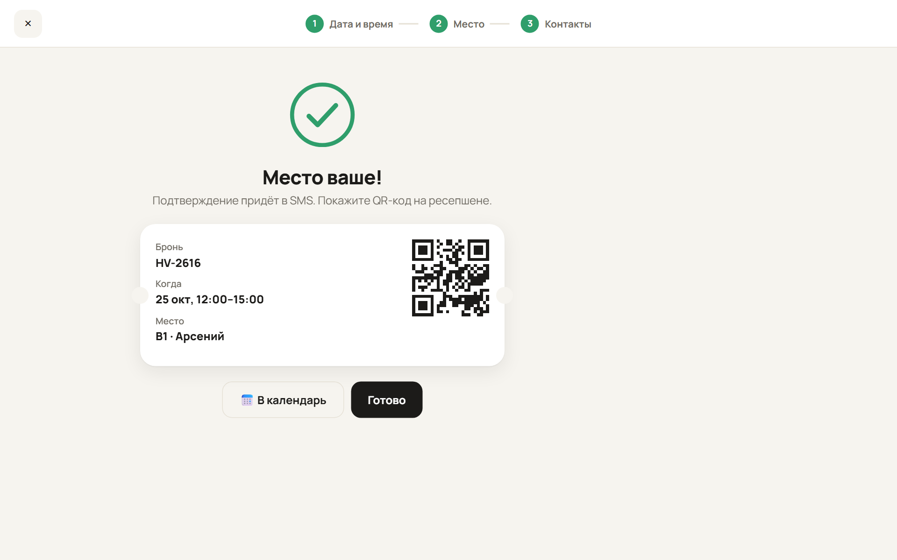
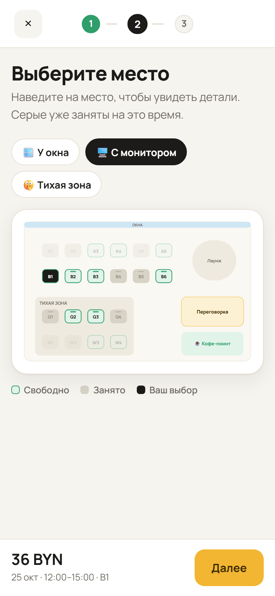

Лендинг и полный сценарий бронирования: выбор тарифа, даты и времени, интерактивная карта мест с фильтрами, контакты с маской телефона и промокодом, подтверждение с QR-кодом. Без звонков менеджеру.
Свободные места зависят от времени, поэтому карту показываем уже отфильтрованной. Пользователь не выбирает место, которое потом окажется занято.
Люди выбирают «у окна» или «подальше от кофе-поинта». План зала с зонами, фильтрами и подсказками при наведении отвечает на эти вопросы быстрее любого списка.
На компьютере — боковая панель с бронью и суммой, на телефоне — нижняя панель с ценой и кнопкой «Далее». Сумма плавно пересчитывается при каждом изменении.
Маска белорусского номера, понятные ошибки под полями, промокод применяется сразу. Кнопка оплаты показывает итоговую сумму.
Счётчик свободных мест на главной, скелетон при загрузке карты, анимированная галочка и билет с QR на финале.
Навигация с клавиатуры, Esc закрывает бронь, учтён prefers-reduced-motion, контрастные состояния мест: свободно, занято, выбрано.






Сделано с ИИ. Прототип собран ИИ-агентом (Claude Code) в моём рабочем процессе: сценарий и решения → генерация → правки по скриншотам на компьютере и телефоне.
Заказчик получает не картинки, а работающий интерфейс: можно пройти бронь на своём телефоне и сразу дать правки.
Стек: HTML, CSS, vanilla JS, SVG-карта. «Улей» — вымышленный коворкинг, бронь и оплата ненастоящие.
Проектирую и собираю интерактивные прототипы и лендинги: бронирование, записи, каталоги, игровые интерфейсы.